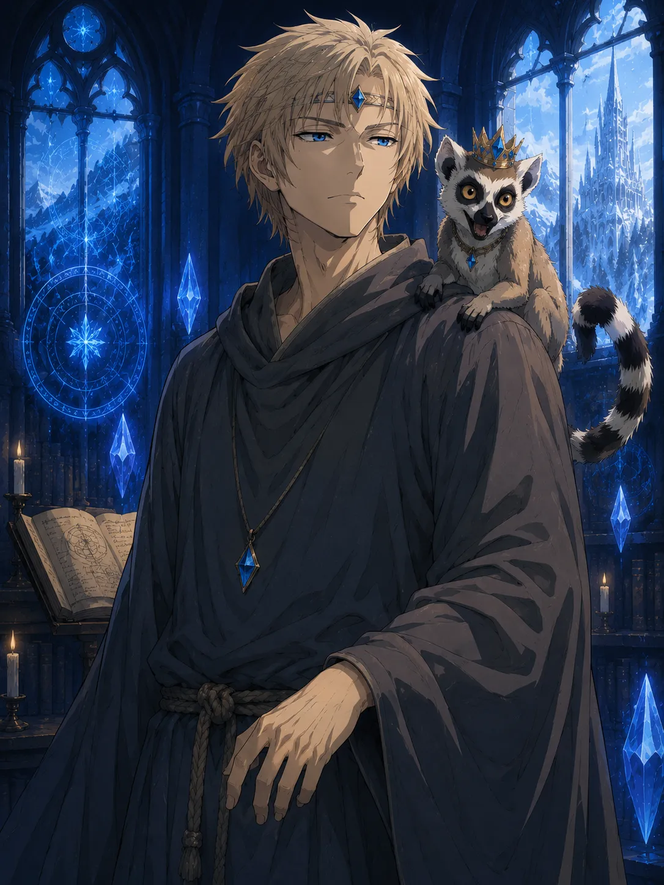
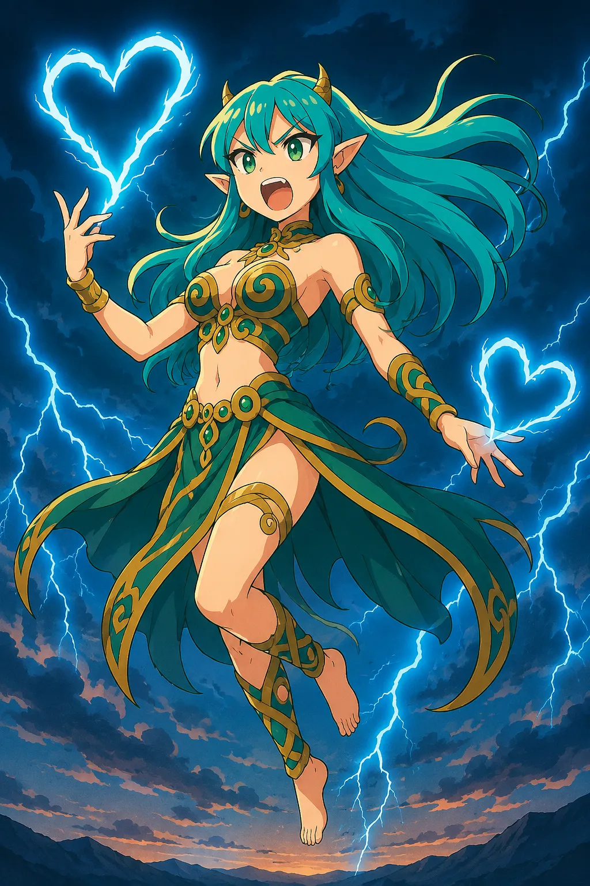

Gruppo 1 · Avventura 2
Echi nella Torre dell’Artiglio
Testo di lavoro per il Master · Ellan 3.0
Introduzione per il Master
Questa avventura riprende immediatamente dalla conclusione de L’Ombra su Watermire. I personaggi, Aelissa, Zoey e i superstiti sono stati trasportati alla Torre dell’Artiglio dal rituale compiuto nel presidio. I personaggi hanno inoltre assistito alla prima, incomprensibile lezione di Harukel: per loro può essere sembrata un sogno o una visione, ma alcuni dettagli erano troppo nitidi per essere liquidati facilmente.
Echi nella Torre dell’Artiglio è un’avventura di respiro e scoperta. Dopo l’assedio, i personaggi hanno finalmente il tempo di curarsi, parlare di quanto è accaduto e comprendere che Watermire era soltanto l’inizio. La Torre deve apparire insieme come rifugio, cittadella viva e luogo inquietante, nel quale ogni porta sembra custodire conoscenze più antiche di chi la attraversa.
Elementi centrali
- Dare conseguenze emotive e concrete agli eventi di Watermire.
- Presentare la Torre dell’Artiglio, la sua comunità e il suo ruolo nel mondo della magia.
- Mostrare il Mana attraverso lezioni ed esperienze, senza legarsi a un regolamento specifico.
- Studiare le monete d’oricalco, il marchio del Serpente Infinito e ciò che resta del congegno distrutto.
- Introdurre Cryon Lonewolf e Re Julian.
- Fornire una pista verso Yatandra, preparando l’avventura successiva.
- Sviluppare l’incontro con Tyna Silverwolf e introdurre Lyra prima della partenza per Lysses.
La Torre dell’Artiglio
La Torre sorge su un’isola al centro del fiume Steel, circondata da nebbie incantate. Piccole barche prive di rematore attraversano il fiume seguendo percorsi invisibili e costituiscono il modo più sicuro per raggiungerla o lasciarla. Dall’esterno la costruzione sembra un unico artiglio di pietra nera proteso verso il cielo; all’interno, tuttavia, corridoi, cortili, aule, biblioteche e alloggi occupano spazi che non sempre sembrano compatibili con le sue dimensioni.
La Torre non è soltanto una scuola. È un archivio, un osservatorio, un rifugio per studiosi e un presidio contro fenomeni magici che altrove verrebbero ignorati o temuti. Vi convivono maestri, apprendisti, guaritori, archivisti, esploratori e ospiti temporanei. Il tono generale non deve essere solenne in ogni momento: la magia è straordinaria per i personaggi, ma per chi vive qui è anche quotidianità, lavoro, errore, vanità e discussione.
Atto I – Il risveglio
Il buio si ritira lentamente. Sotto di voi sentite un pavimento freddo, liscio come vetro. L’eco della voce di Harukel sembra ancora vibrare in un angolo della memoria, insieme all’immagine impossibile di un’aula immersa nell’ombra.
Quando aprite gli occhi, Watermire non c’è più. Vi trovate in un’enorme sala circolare dalle pareti di pietra nera, percorse da rune che pulsano come braci sotto la cenere. Torce azzurre ardono senza consumarsi. Attorno a voi, inservienti e guaritori soccorrono gli abitanti trasferiti dal presidio: acqua, coperte e mani tese sostituiscono finalmente urla, sangue e non morti.
Davanti a voi attende una figura alta ed emaciata. Lunghi capelli neri gli ricadono sulle spalle; l’armatura candida che indossa sembra composta da ossa fuse insieme. Vi osserva con occhi scuri e immobili.
«Finalmente. Io sono Asgheyroth, Rettore della Torre dell’Artiglio. Avremo tempo per parlare. Ora lasciate che si occupino di voi»
I superstiti
Nella sala si trovano anche Geffroi, la kalane, Aelissa, Zoey e i superstiti di Watermire. Nessuno è rimasto indietro. I feriti vengono condotti nelle sale di cura, alle famiglie sono assegnati alloggi provvisori, i bambini ricevono cibo, abiti puliti e un luogo in cui dormire.
In questa prima fase Geffroi è ancora troppo debole per guidare i personaggi attraverso la Torre e si muove su una carrozzina. È anche visibilmente invecchiato: il volto è più segnato, i capelli sembrano più grigi e i movimenti sono quelli di un uomo che porta addosso molti più anni di prima. Il rituale che ha trasportato tutti i superstiti da Watermire alla Torre ha preteso da lui un prezzo enorme, ben oltre la perdita di energie momentanea. La sua gratitudine è autentica, ma è accompagnata dal peso di non essere riuscito a salvare Tura e dal timore che quanto avvenuto a Watermire sia collegato a qualcosa di molto più grande.
Il Master dovrebbe concedere tempo alle conversazioni. I personaggi possono controllare le condizioni delle persone che hanno aiutato, raccontarsi ciò che hanno visto durante il rituale, confrontare il ricordo di Harukel e decidere quanto rivelare alla Torre. Aelissa e Zoey reagiscono secondo il carattere mostrato nell’avventura precedente: Aelissa osserva e prende nota; Zoey cerca cibo, persone da consolare e un modo per rendere meno pesante la paura.
La prima notte
Ai personaggi vengono assegnate stanze semplici ma confortevoli. La Torre sembra quieta, ma non silenziosa: passi dietro porte chiuse, pagine che si voltano da sole, campane lontane e mormorii nelle tubature accompagnano il riposo. Chi rimane sveglio può percepire per un istante l’eco della lezione di Harukel o la sensazione che qualcuno, da un luogo e da un’epoca impossibili, stia osservando la loro storia.
Atto II – Una cittadella di magia
Il giro della Torre
Quando le condizioni di Geffroi lo permettono, il magister raggiunge i personaggi in carrozzina e propone di mostrare loro la Torre. Non è una visita turistica: vuole sottrarli all’attesa, capire come reagiscono alla magia e prepararli ai colloqui con il Rettore.
Durante il percorso il Master può mostrare alcuni dei seguenti luoghi, scegliendo quelli più adatti ai personaggi:
- l’infermeria, dove guaritori e apprendisti tentano di comprendere ferite e contaminazioni lasciate dal congegno di Watermire;
- la biblioteca, con scale mobili, scaffali più profondi di quanto dovrebbero e sezioni accessibili soltanto con il permesso di un maestro;
- le aule circolari, nelle quali pareti incantate rendono visibili flussi di Mana, costellazioni e strutture invisibili;
- i cortili interni, dove si svolgono esercitazioni, discussioni e piccoli incidenti magici;
- l’imbarcadero sul fiume Steel, oltre il quale le nebbie nascondono le rive e le barche si muovono senza rematori;
- le stanze interdette, davanti alle quali persino gli studenti abbassano la voce.
Il giro deve offrire occasioni per interagire, non soltanto descrizioni. Un oggetto può reagire a un personaggio, un apprendista può riconoscere gli eroi di Watermire, un esperimento può sfuggire di mano o una porta può rifiutarsi di aprirsi a qualcuno. Questi episodi non devono diventare per forza ostacoli: servono a rendere la Torre viva e a permettere ai personaggi di mostrare curiosità, prudenza, ironia o diffidenza.
Lezione sulla natura del Mana
Il professor Aelrik Varnen è un uomo alto, dai lunghi capelli grigi raccolti in una coda. Indossa una tunica color zaffiro e parla lentamente, scandendo le frasi come formule. L’aula è circolare; sulle pareti scorrono diagrammi viventi che mostrano correnti di Mana attraversare pietra, acqua, piante e corpi.
«Il Mana è ovunque, come l’acqua in una spugna. Ma non tutto può essere assorbito, né tutto compreso. Se ascoltate bene, lo sentirete vibrare dentro di voi… oppure vi sfuggirà.»
La lezione alterna spiegazione ed esperienza. Ai personaggi viene chiesto di osservare piccole fonti di Mana e descrivere come le percepiscono. Non esiste una risposta unica: calore, suono, colore, pressione, ricordo o istinto possono essere modi differenti di avvertire la stessa presenza. Il Master può usare la scena per far emergere affinità o difficoltà individuali senza assegnare automaticamente nuovi poteri.
Lezione su illusioni e tracciamento
Mirana Quailand è la docente delle illusioni. Si presenta come un’elfa dai tratti affilati e dai capelli ramati intrecciati con piccole gemme. Ha un tono deciso e sarcastico. La sua lezione si svolge in un cortile circondato da colonne vive di foglie e rami, dove ombre, suoni e impronte possono essere creati oppure nascosti.
«L’illusione non è soltanto inganno. A volte è sopravvivenza. E chi sa riconoscere una traccia falsa ha già evitato metà delle trappole che lo attendono.»
I personaggi devono distinguere segni autentici da falsi indizi, individuare glifi nascosti e trovare soluzioni adatte alle proprie capacità. La difficoltà può essere moderata all’inizio e crescere se il gruppo chiede una prova più impegnativa. Il valore della scena è mostrare come competenze diverse possano collaborare: intuito, magia, osservazione, esperienza della natura e conoscenza delle persone.
Atto III – Le domande della Torre
La convocazione di Asgheyroth
Il Rettore convoca i personaggi uno alla volta nel proprio studio, perfettamente ordinato e affacciato sul fiume Steel. La separazione permette al Master di porre domande differenti a ciascuno e di mettere in evidenza versioni, omissioni e paure personali.
Asgheyroth vuole ricostruire con precisione quanto è accaduto a Watermire. Si concentra sulla rigenerazione dei non morti, sulle rovine, sul congegno, sul comportamento di Iria Varn e sulle monete d’oricalco. Se i personaggi chiedono del tatuaggio e di chi lo portava, ascolta le loro domande ma non avvia lui l'indagine: propone semplicemente di farli incontrare con Neven Lare, una delle esploratrici degli Occhi della Torre, che potrebbe avere qualcosa di pertinente da raccontare. Non accusa i personaggi, ma li tratta con la severità fredda e tagliente descritta nel Manuale del Master: deve ricordare il Severus Piton dei film di Harry Potter, intimidatorio e apparentemente duro, pur senza essere crudele né malvagio.
Durante l’interrogatorio Asgheyroth usa, senza dichiararlo, una forma di magia mentale per leggere direttamente la verità nei ricordi dei personaggi. Le sue domande seguono ciò che percepisce, soffermandosi su esitazioni, omissioni e immagini che l’interrogato non ha ancora pronunciato. Il Master deve rendere avvertibile la pressione, ma non spiegare subito il metodo.
Se Aelissa ha stretto un legame con un personaggio, oppure comprende che qualcuno ha una ragione importante per proteggere un segreto, prima della convocazione gli porge uno dei propri orecchini e gli consiglia soltanto di indossarlo. Non ne svela l'effetto: è un oggetto magico Ellantil creato per impedire la lettura mentale, uno degli strumenti con cui gli Ellantil evitavano di essere scoperti durante la Lontananza. Protegge anche Aelissa quando lo indossa. Nota riservata al Master: la funzione dell'orecchino non deve rivelare ai protagonisti né l'identità Ellantil di Aelissa né la Lontananza.
Quando il personaggio entra nello studio con l’orecchino, Asgheyroth comincia normalmente, poi si interrompe per una frazione di secondo e aggrotta la fronte, sinceramente sorpreso. Non riesce a oltrepassare la barriera. Può diventare più preciso nelle domande o osservare con maggiore attenzione l’orecchino, ma non rivela di aver tentato di leggere la mente e non lo sottrae al personaggio.
Chi non indossa la protezione può comunque scegliere che cosa dire ad alta voce, ma Asgheyroth riconosce la verità essenziale nei suoi pensieri. Usa questa conoscenza per valutare i personaggi e proteggere la Torre, non per umiliarli. Il contrasto tra il suo aspetto minaccioso, i modi duri e le intenzioni sostanzialmente giuste deve restare evidente al Master, non necessariamente ai personaggi.
Durante i colloqui, gli altri personaggi sono liberi di esplorare gli spazi consentiti e parlare con gli abitanti della Torre. È in questi intervalli che si svolgono l’incontro con Tyna Silverwolf e, più avanti, la scoperta del Sigillo Invertito.
Le monete d’oricalco
Le monete vengono esaminate in un laboratorio protetto. Gli studiosi identificano il metallo come oricalco, estremamente raro, ma non riescono a stabilire chi abbia coniato le monete né dove siano state prodotte. Tutte recano un uccello su una faccia e il profilo di una ragazza sconosciuta sull'altra. L'esame non rivela poteri magici, registrazioni di Mana o reazioni alla vicinanza dei personaggi.
La loro presenza nelle mani di persone risvegliatesi insieme a Watermire resta inspiegabile. Gli studiosi non hanno motivo di trattenerle e le restituiscono ai personaggi. Nessuno alla Torre collega le monete a una civiltà chiamata Ellantil, della cui esistenza è all'oscuro.
Nota riservata al Master: l'oricalco è un metallo impiegato dagli Ellantil, ma gli Ellantil non hanno mai coniato monete. Queste sono un semplice vezzo di Nyarell, che ha trasportato il gruppo a Watermire; l'effigie è il suo volto, irriconoscibile per chi non l'ha mai vista. Le monete non sono collegate alla funzione energetica dei dischi Ellantil.
Il marchio del Serpente Infinito
Il tatuaggio visto su Iria Varn può suscitare la curiosità dei personaggi: chi lo porta, che cosa rappresenta e perché qualcuno con quel marchio ha agito a Watermire? Non serve che Asgheyroth anticipi queste domande né che fornisca una spiegazione del simbolo. Se i protagonisti vogliono approfondire, il Rettore organizza un incontro con Neven Lare, che ha visto qualcosa di simile durante uno dei suoi viaggi. Non rivela loro il nome degli Eterni né presenta conclusioni che non sono ancora in grado di trarre.
Indicazione per il Master: la pista nasce dall'interesse dei giocatori. Lascia loro il tempo di formulare domande e mettere in relazione il racconto di Neven con quanto hanno vissuto, senza imporre un'indagine già confezionata.
Atto IV – Cryon Lonewolf
L’incontro
Durante la permanenza alla Torre, i personaggi vengono invitati a incontrare Cryon Lonewolf su una terrazza affacciata sulle nebbie dello Steel. Può essere Cryon stesso a desiderare di conoscere i superstiti di Watermire: non occorre un richiamo magico o una conoscenza soprannaturale del loro destino.
Cryon appare come un uomo sulla quarantina, dai capelli castano chiaro, gli occhi grigi e profondi e le vesti semplici nei colori della terra. È un mago di fama straordinaria, ma non cerca di impressionare. Sulla sua spalla è accoccolato un lemure dalla coda ad anelli, Re Julian, che osserva i nuovi arrivati con molta meno solennità.
Cryon non interroga i personaggi come Asgheyroth. Chiede invece che cosa credono sia realmente accaduto, quale parte della vicenda li spaventi di più e perché, dopo Watermire, intendano continuare. Ascolta le risposte senza correggerle subito.
Può parlare della responsabilità che accompagna la conoscenza e ricordare che la magia non rende nessuno automaticamente più saggio. Se un personaggio è dominato dal desiderio di vendetta, Cryon non nega il dolore, ma lo invita a non permettere che decida ogni scelta futura.
Re Julian spezza la gravità della scena in modo molto meno discreto. Mentre Cryon parla con assoluta serietà delle conseguenze del potere, alle sue spalle compare il lemure con un dolcetto stretto tra le zampe. Subito dopo irrompe Zoey, furibonda, che lo insegue lungo la terrazza. Re Julian corre, salta su una balaustra e le fa una smorfia; Zoey gli intima di restituire ciò che ha rubato. Cryon continua il discorso come se nulla stesse accadendo, limitandosi a chiudere gli occhi per un istante con la rassegnazione di chi ha già assistito molte volte alla stessa scena. Il contrasto, quasi da cartone animato, rende l’incontro memorabile senza togliere autorevolezza al mago.
Nota per il Master: Cryon, allievo di Lir-Lir-Tu e grande riformatore della Torre, ascolta più di quanto parli. Fu maestro di Asgheyroth e conserva importanti amicizie con Pardisan e Cristal. Non deve fornire soluzioni già pronte né dirigere il gruppo: aiuta i protagonisti a ragionare sulle conseguenze delle loro scelte. Re Julian è il suo famiglio, curioso e incline a sottrarre oggetti e dolci; il siparietto con Zoey riflette il loro rapporto affettuoso e imprevedibile.
La pista verso Yatandra
Neven Lare è una giovane esploratrice appena tornata da una ricognizione nei Reami del Nord. È piccola e magra, veste abiti da viaggio scuri e funzionali e parla poco, ma ogni gesto rivela un’esperienza insolita per la sua età. Sa muoversi senza lasciare tracce, seguire piste, sopravvivere lontano dalle strade e aprire porte che altri considererebbero chiuse.
Neven appartiene a una rete di agenti esterni della Torre: esploratori, informatori, guide, infiltrati e persone d’azione che non sono maghi né Magister. La Torre ricorre a loro quando servono discrezione, conoscenza del territorio o capacità che non si apprendono nelle aule. Neven non presenta la rete come un ordine formale e non rivela nomi o dimensioni; lascia soltanto capire che gli occhi della Torre arrivano molto oltre l’isola.
Quando Asgheyroth le presenta i personaggi interessati al tatuaggio, Neven ascolta la loro descrizione prima di rispondere. Il suo racconto: «Ho visto una persona con un segno simile a quello che descrivete. Si stava dirigendo verso Yatandra. Non so chi fosse, né che cosa cercasse laggiù.» Neven distingue ciò che ha visto dalle proprie supposizioni e, se interrogata, non inventa dettagli che non conosce. È il primo indizio concreto fuori da Watermire, ma tocca ai protagonisti decidere se seguirlo.
Asgheyroth non ordina ai personaggi di partire e non utilizza le monete come motivo per indirizzarli verso Yatandra. Se scelgono di approfondire la pista, Neven può accompagnarli fino a Lysses e presentarli personalmente a Namari, loro collegamento con le vie non ufficiali verso Yatandra.
La scelta deve apparire reale, ma la conclusione naturale dell’avventura è che il gruppo accetti. Aelissa e Zoey scelgono di proseguire con loro.
Atto V – Legami prima della partenza
L’incontro con Tyna Silverwolf
Durante gli interrogatori, mentre alcuni personaggi attendono il proprio turno, un’insegnante conduce il personaggio che aveva tenuto l’orologio di Tura a una piccola stanza piena di libri e pergamene. Se nella campagna esiste un personaggio legato all’orologio o alla voce udita durante la morte di Tura, è la scelta naturale; altrimenti il Master scelga chi ha mostrato maggiore empatia verso Tura, Geffroi o i superstiti di Watermire.
Nella stanza li attende Tyna Silverwolf. È una giovane studentessa dai lunghi capelli biondi, con leggere occhiaie, le dita macchiate d’inchiostro e l’aria di chi ha studiato tutta la notte. Quando vede il personaggio, sobbalza.
«Tu… tu eri con mia sorella, vero? Quella notte vi ho sentiti. Non era un sogno.»
Tyna vive nel confronto continuo con Tura. Sua sorella possedeva un talento quasi istintivo per i glifi, capace di spingersi fino a risultati che nessuno aveva mai tentato; Tyna, al contrario, deve riflettere su ogni segno e spesso ricominciare. Non è priva di capacità, ma ha molto meno talento naturale e ne è dolorosamente consapevole. Non chiede soltanto come Tura sia morta: vuole sapere se ha avuto paura, se è riuscita davvero a salvare qualcuno e se le sue ultime azioni hanno avuto un senso.
Nel parlare, la ragazza lascia emergere il proprio timore più profondo: non essere altro che “la sorella rimasta”. I suoi glifi sono incerti, pieni di correzioni; porta ancora sulle dita l'inchiostro di tentativi ripetuti e teme di non riuscire mai a proteggere nessuno. Eppure continua a esercitarsi, anche quando pensa di non esserne capace. Non definisce questo atteggiamento determinazione: per lei è semplicemente il bisogno di provare ancora. Il personaggio può consolarla, raccontarle ciò che Tura ha compiuto oppure ricordarle che non deve diventare una copia della sorella.
Se riceve anche un poco di fiducia, Tyna abbassa gli occhi sui propri appunti, poi prova a parlare: «Non so se sarò mai brava come lei. A volte penso di non essere portata per tutto questo… Però vorrei provarci. Ancora una volta. E magari un giorno riuscire a proteggere qualcuno anch'io.» Non è un discorso sicuro o eroico: è una decisione esitante, ma sincera.
Il giudizio di Geffroi
Più tardi Tyna chiede a Geffroi di accettarla come allieva ma chiede di essere accompagnata dal personaggio di cui sopra. Il magister la riceve dalla carrozzina, ancora debilitato dalle ferite. Non addolcisce il giudizio: Tura aveva una mano eccezionale per i glifi difensivi, mentre i lavori di Tyna sono esitanti e pieni di correzioni. Molti direbbero che non possiede lo stesso talento.
Geffroi, però, ha osservato ciò che Tyna non riconosce in sé stessa: ricomincia ogni volta. Studenti più dotati hanno rinunciato dopo pochi fallimenti; lei torna al tavolo, cancella e riprova, pur tremando al pensiero di sbagliare ancora. «Tua sorella faceva sembrare semplici cose che semplici non erano. A te costeranno fatica, forse molta più di quanto immagini. Ma ogni volta che qualcosa non riesce, tu ritorni a provarci. Questo conta. Anche se ancora non te ne rendi conto.»
Geffroi la accetta come allieva. Tyna trattiene a stento le lacrime; non promette miracoli né di raggiungere Tura, ma chiede soltanto se può cominciare a studiare seriamente con lui. La scena non cancella il lutto e non trasforma all'improvviso Tyna in una maga sicura di sé: ne mostra il primo, incerto passo verso una strada tutta sua, una conseguenza concreta di Watermire destinata a crescere nel tempo.
Se il personaggio ha accettato di accompagnare Tyna da Geffroi, al termine dell’incontro la ragazza gli chiede per qualche istante l’orologio di Tura. Ne regola con cura gli ingranaggi e vi traccia sopra un piccolo glifo, sintonizzandolo in modo che i due possano comunicare a distanza, proprio come Tyna faceva con sua sorella. È il suo modo di ringraziare il personaggio e, insieme, di affidargli qualcosa del legame che aveva con Tura. Da questo momento Tyna potrà mettersi in contatto con lui attraverso l’orologio, e il personaggio potrà fare altrettanto con lei.
Il Sigillo Invertito — scena opzionale (tono comico)
Nota per il Master: il bracciale e l'incontro con Lyra sono un episodio facoltativo, da proporre solo se il gruppo apprezza una componente comica e surreale nella campagna. Non sono necessari per avanzare nella trama, seguire gli indizi sugli Eterni o partire dalla Torre. Se il tono scelto è più serio, ometti interamente questa scena senza sostituirla con un altro evento obbligatorio. Prima di attribuire il bracciale a un personaggio, verifica che il relativo giocatore desideri questo tipo di legame duraturo.
Se scegli di proporre la scena, prima della partenza, uno dei personaggi ode un suono metallico provenire dal secondo livello sotterraneo della Torre, nell’Archivio delle Forme Non Classificate. La sala è dimenticata, attraversata da vetrate nere, cristalli fluttuanti e cerchi arcani incisi sul pavimento; l’aria sa di ozono, fiori secchi e lampi trattenuti.
Un giovane novizio dal mantello bruciacchiato è inginocchiato accanto a un cerchio runico. Sta versando Mana liquido su un antico bracciale di metallo luminoso, percorso da spirali e incisioni che sembrano muoversi. Quando si accorge dei personaggi, grida «Non è ancora pronto!» e fugge nei corridoi, lasciando l’oggetto al centro del rituale.
Il Master individua un personaggio il cui giocatore sia interessato a questa sottotrama comica e accetti il legame con Lyra; non imporre il bracciale a un giocatore che preferisce evitarla. Quando quel personaggio tocca l’oggetto, il bracciale scatta al suo polso e non può più essere rimosso. Le spirali si accendono, il cerchio si spezza con un suono cristallino e una brezza profumata invade la sala.
Appare Lyra
In un’esplosione di luce arcobaleno e piccoli fulmini danzanti compare una giovane donna dagli occhi smeraldo, con capelli turchesi tempestati d’oro che fluttuano come onde elettriche. Ha orecchie a punta, pelle luminosa, piccole corna gialle e abiti cerimoniali ornati da spirali e gioielli sospesi.
Lyra piomba addosso al portatore del bracciale e lo abbraccia con entusiasmo: «Tesoruccio mio! Ma dove sei stato fino ad ora? Mi hai fatto aspettare secoli! Il tempo nella tua dimensione è proprio una lagna!» Una scarica elettrica attraversa entrambi; il personaggio può riuscire a restare composto oppure ritrovarsi spettinato e annerito in modo quasi comico.
Il bracciale lega Lyra al personaggio. Lei può apparire e scomparire a piacere, ma non allontanarsi troppo e deve ritornare periodicamente nell’oggetto. Non sa, o finge di non sapere, che cosa sia davvero: «Uno spirito, una scintilla, un’idea innamorata? Tutte cose vere, tutte cose false!» Chiama il personaggio “Tesoruccio” e sostiene di essere stata sigillata da «un arcimago musone, con una voce fastidiosa e zero senso estetico».
Solo se questa scena opzionale viene giocata, Lyra entra nel gruppo prima della partenza per Lysses. La sua comparsa deve essere improvvisa, comica e leggermente pericolosa, ma non deve cancellare il tono più intimo dell’incontro appena avvenuto con Tyna.
Conclusione – L’addio alla Torre
Dopo alcuni giorni di cure, studio e preparativi, i personaggi raggiungono l’imbarcadero. Le barche incantate attendono immobili sull’acqua. Geffroi li saluta dalla carrozzina: non può accompagnarli e deve iniziare una lunga convalescenza, ma affida loro la speranza che quanto accaduto a Watermire non venga dimenticato. Accanto a lui c’è Tyna, ormai sua allieva; poco più avanti Neven attende presso le barche, pronta a guidare il gruppo verso Lysses.
Kalane e gli altri superstiti restano alla Torre come ospiti temporanei. Il commiato deve permettere ai personaggi di salutare le persone che hanno salvato e di percepire il risultato delle proprie azioni: Watermire è perduta o ferita, ma i suoi abitanti sono vivi.
Quando la barca si stacca dall’isola, la Torre scompare lentamente nella nebbia. Davanti al gruppo si apre la strada verso Yatandra; alle loro spalle restano domande alle quali neppure i più grandi maghi hanno saputo rispondere.
Scena dopo i titoli – Il tavolo bianco
Una sala silenziosa. La luce si riflette appena sulla superficie di un lungo tavolo di pietra bianca. Sopra sono distese mappe, alcune aperte, altre arrotolate. Le due figure accanto al tavolo rimangono quasi interamente nascoste nell'ombra. La donna punta il dito sul regno di Yatandra.
«Andremo e prenderemo ciò che è nostro.»
La seconda figura, alta e immobile, osserva la mappa e rompe il silenzio:
«E se quei due opponessero resistenza?»
La donna lascia ricadere la mano sul tavolo.
«Allora mostreremo al vecchio guerriero ed alla vecchia maga che il loro tempo è passato.»
Per un istante torna il silenzio. L'inquadratura si stringe lentamente sulla mappa, fino a fermarsi sul simbolo della casa reale di Yatandra.
Buio.
Nota riservata al Master: le due figure sono la Regina Bianca e la Torre Bianca. La prima coordina informazioni e operazioni occulte; la seconda è il riferimento militare degli Eterni. Non nominarle né mostrarne le identità ai giocatori. La scena allude a un vecchio guerriero e a una vecchia maga senza identificarli: il Master non ne chiarisce i nomi ai giocatori.
Funzione della scena
- Collegare il mistero del tatuaggio alla possibile pista di Yatandra.
- Mostrare dietro le quinte Regina Bianca e Torre Bianca, mantenendone segrete le identità.
- Accennare alla contrapposizione con un vecchio guerriero e una vecchia maga, senza rivelare ai giocatori a chi si riferiscano.
Informazioni riservate al Master
- La prima lezione di Harukel non è stata un sogno: i personaggi hanno assistito accidentalmente a una lezione dell’università transplanare del futuro.
- Harukel non è consapevole di essere stato visto e non sta guidando gli eventi.
- Le monete d’oricalco sono un vezzo personale di Nyarell, senza alcuna funzione magica. Gli studiosi possono riconoscere l'oricalco, ma ignorano l'esistenza degli Ellantil e non attribuiscono le monete a quella civiltà; non conoscono nemmeno l'identità di chi le ha lasciate ai personaggi.
- Il Serpente Infinito è il marchio degli Eterni. La Torre possiede soltanto frammenti e testimonianze contraddittorie.
- La pista verso Yatandra è autentica; la scena dopo i titoli mostra la Regina Bianca e la Torre Bianca consapevoli del rischio che qualcuno segua uno dei loro agenti, senza anticiparne il piano.
- Le eventuali scene personali devono essere costruite sui personaggi effettivamente creati per questa campagna, non sui protagonisti della versione giocata in precedenza.
- Mirana Quailand è in realtà Mirana Nagai sotto mentite spoglie. Alla Torre vive una seconda vita e nasconde il proprio aspetto mediante illusioni; né i personaggi né il testo destinato a loro devono lasciarlo intuire in questa avventura.
- Asgheyroth usa discretamente la magia mentale durante gli interrogatori. Gli orecchini di Aelissa impediscono la lettura della mente, compresa la sua; il Rettore non ne conosce subito la ragione.
Personaggi dell’avventura — galleria
Seleziona un ritratto per aprirlo a grandezza intera.


_risultato.webp)

_risultato.webp)
_risultato.webp)
_risultato.webp)

Fonte: documento originale su Drive. Il testo originale è conservato.